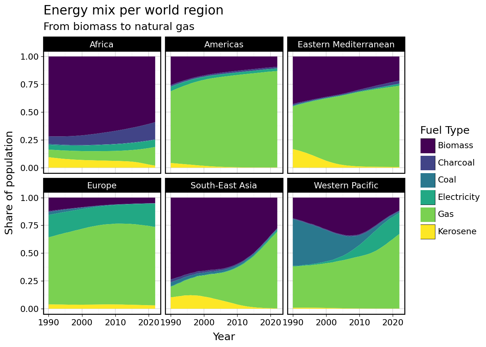

import polars as pl
import polars.selectors as cs
from plotnine import *
from great_tables import GT
theme_set(theme_linedraw())Wrangling
Data
Part I. Basics
# indoor air pollution
hhap_deaths = pl.read_csv("hhap/hhap_deaths.csv")
clean_fuels = pl.read_csv("hhap/clean_fuels_cooking.csv")
fuel_types = pl.read_csv("hhap/cooking_by_fuel_type.csv")Data Overview
Polars data frames can be conveniently previewed with
hhap_deaths
shape: (10_800, 6)
| region | country_code | country | year | cause_of_death | deaths |
|---|---|---|---|---|---|
| str | str | str | i64 | str | f64 |
| "Americas" | "ATG" | "Antigua and Barbuda" | 2010 | "All causes" | 0.0 |
| "Americas" | "ATG" | "Antigua and Barbuda" | 2010 | "Acute lower respiratory infect… | 0.0 |
| "Americas" | "ATG" | "Antigua and Barbuda" | 2010 | "Trachea, bronchus, lung cancer… | 0.0 |
| "Americas" | "ATG" | "Antigua and Barbuda" | 2010 | "Ischaemic heart disease" | 0.0 |
| "Americas" | "ATG" | "Antigua and Barbuda" | 2010 | "Stroke" | 0.0 |
| … | … | … | … | … | … |
| "Americas" | "BOL" | "Bolivia (Plurinational State o… | 2019 | "Trachea, bronchus, lung cancer… | 98.72 |
| "Africa" | "GNB" | "Guinea-Bissau" | 2019 | "Chronic obstructive pulmonary … | 98.88 |
| "Africa" | "CIV" | "Cote d'Ivoire" | 2019 | "Chronic obstructive pulmonary … | 990.6 |
| "Europe" | "TUR" | "Türkiye" | 2019 | "Chronic obstructive pulmonary … | 997.6 |
| "Europe" | "UZB" | "Uzbekistan" | 2019 | "All causes" | 9982.0 |
By default this shows 5 first and 5 last rows of the data. Rows are often called observations or records and columns are called variables or features. If you want to see a few more observations off the top of the dataset, you can call
(hhap_deaths
.head(10))
shape: (10, 6)
| region | country_code | country | year | cause_of_death | deaths |
|---|---|---|---|---|---|
| str | str | str | i64 | str | f64 |
| "Americas" | "ATG" | "Antigua and Barbuda" | 2010 | "All causes" | 0.0 |
| "Americas" | "ATG" | "Antigua and Barbuda" | 2010 | "Acute lower respiratory infect… | 0.0 |
| "Americas" | "ATG" | "Antigua and Barbuda" | 2010 | "Trachea, bronchus, lung cancer… | 0.0 |
| "Americas" | "ATG" | "Antigua and Barbuda" | 2010 | "Ischaemic heart disease" | 0.0 |
| "Americas" | "ATG" | "Antigua and Barbuda" | 2010 | "Stroke" | 0.0 |
| "Americas" | "ATG" | "Antigua and Barbuda" | 2010 | "Chronic obstructive pulmonary … | 0.0 |
| "Western Pacific" | "AUS" | "Australia" | 2010 | "All causes" | 0.0 |
| "Western Pacific" | "AUS" | "Australia" | 2010 | "Acute lower respiratory infect… | 0.0 |
| "Western Pacific" | "AUS" | "Australia" | 2010 | "Trachea, bronchus, lung cancer… | 0.0 |
| "Western Pacific" | "AUS" | "Australia" | 2010 | "Ischaemic heart disease" | 0.0 |
When the number of columns is large, this may not be the most convenient way of getting an overview of the data. Alternative representation can be produced using glimpse, which shows the same data in horizontal (textual) form, i.e. every variable now occupies one row.
(clean_fuels
.glimpse())Rows: 6402
Columns: 6
$ region <str> 'Africa', 'Western Pacific', 'Western Pacific', 'Western Pacific', 'Western Pacific', 'Africa', 'Western Pacific', 'Africa', 'Western Pacific', 'Western Pacific'
$ country_code <str> 'SSD', 'NIU', 'TKL', 'COK', 'PLW', 'STP', 'FSM', 'BDI', 'NRU', 'TUV'
$ country <str> 'South Sudan', 'Niue', 'Tokelau', 'Cook Islands', 'Palau', 'Sao Tome and Principe', 'Micronesia (Federated States of)', 'Burundi', 'Nauru', 'Tuvalu'
$ year <i64> 2022, 2022, 2022, 2022, 2022, 2022, 2022, 2022, 2022, 2022
$ pop_clean_fuels_cooking_mln <f64> 0.0, 0.002, 0.0004, 0.013, 0.007, 0.009, 0.014, 0.013, 0.011, 0.009
$ prop_clean_fuels_cooking_pct <f64> 0.0, 98.5, 28.3, 72.7, 29.45, 4.1, 13.2, 0.1, 100.0, 75.2
We can also look at the table of statistical summaries for our data
(clean_fuels
.describe())
shape: (9, 7)
| statistic | region | country_code | country | year | pop_clean_fuels_cooking_mln | prop_clean_fuels_cooking_pct |
|---|---|---|---|---|---|---|
| str | str | str | str | f64 | f64 | f64 |
| "count" | "6402" | "6402" | "6402" | 6402.0 | 6402.0 | 6402.0 |
| "null_count" | "0" | "0" | "0" | 0.0 | 0.0 | 0.0 |
| "mean" | null | null | null | 2006.0 | 19.29797 | 61.080069 |
| "std" | null | null | null | 9.522648 | 73.100935 | 39.952764 |
| "min" | "Africa" | "AFG" | "Afghanistan" | 1990.0 | 0.0 | 0.0 |
| "25%" | null | null | null | 1998.0 | 0.23 | 16.6 |
| "50%" | null | null | null | 2006.0 | 2.24 | 78.0 |
| "75%" | null | null | null | 2014.0 | 10.24 | 100.0 |
| "max" | "Western Pacific" | "ZWE" | "Zimbabwe" | 2022.0 | 1257.0 | 100.0 |
select/exclude/drop and filter
One of the most common things done in data analysis is selecting particular variables.
(clean_fuels
.select(pl.col("country"))
)
shape: (6_402, 1)
| country |
|---|
| str |
| "South Sudan" |
| "Niue" |
| "Tokelau" |
| "Cook Islands" |
| "Palau" |
| … |
| "Austria" |
| "Germany" |
| "Sweden" |
| "Portugal" |
| "India" |
As you can see the column name is wrapped into the expression for column pl.col(). The wrapper can sometimes be skipped, as the case is here. The select() will “wrap” the strings you provide into the pl.col() wrapper interpreting them as column names
(clean_fuels
.select("country_code", "country")
)
(clean_fuels
.select(pl.col("country_code"), pl.col("country"))
)
shape: (6_402, 2)
| country_code | country |
|---|---|
| str | str |
| "SSD" | "South Sudan" |
| "NIU" | "Niue" |
| "TKL" | "Tokelau" |
| "COK" | "Cook Islands" |
| "PLW" | "Palau" |
| … | … |
| "AUT" | "Austria" |
| "DEU" | "Germany" |
| "SWE" | "Sweden" |
| "PRT" | "Portugal" |
| "IND" | "India" |
Column names wrapped into pl.col() represent the simplest kind of expressions. In polars we create expressions and evaluate them in the context of the data. Expressions taken in isolation don’t do anything, they need to be considered in the context of the data to return some data. This line of code does not do anything. It just returns an expression:
pl.col("country_code")
col("country_code")
But when we evaluate in the context of the clean_fuels dataframe it will will return a column of country codes
(clean_fuels
.select(pl.col("country_code"))
)
shape: (6_402, 1)
| country_code |
|---|
| str |
| "SSD" |
| "NIU" |
| "TKL" |
| "COK" |
| "PLW" |
| … |
| "AUT" |
| "DEU" |
| "SWE" |
| "PRT" |
| "IND" |
In this case, select() statement provides an evaluation environment. There are several commands in polars which provide an environment for evaluating data expressions and select() is the simplest one of them. It is really versatile, but at this time we will only consider the simplest usecase: extracting columns from the dataframe using expressions.
Using column name wrapped in pl.col() as an expression-starter is a very common approach in polars. We will use it quite often to build powerful expressions tranforming columns in polars. Expressions can used to refer to multiple columns at once. For example, here we are making an expression which will refer to all columns other than country and region.
(clean_fuels
.select(pl.all().exclude("country", "region"))
)
shape: (6_402, 4)
| country_code | year | pop_clean_fuels_cooking_mln | prop_clean_fuels_cooking_pct |
|---|---|---|---|
| str | i64 | f64 | f64 |
| "SSD" | 2022 | 0.0 | 0.0 |
| "NIU" | 2022 | 0.002 | 98.5 |
| "TKL" | 2022 | 0.0004 | 28.3 |
| "COK" | 2022 | 0.013 | 72.7 |
| "PLW" | 2022 | 0.007 | 29.45 |
| … | … | … | … |
| "AUT" | 1990 | 7.72 | 100.0 |
| "DEU" | 1990 | 79.12 | 100.0 |
| "SWE" | 1990 | 8.57 | 100.0 |
| "PRT" | 1990 | 9.95 | 100.0 |
| "IND" | 1990 | 96.58 | 11.1 |
pl.all() refers to all columns in the evaluation environment and it gets further refined by method chaining excluding country and region.
Selecting columns is a very common operation. It is so important and used so often, that there’s a special class of methods designed specifically for this purpose, situated in polars.selectors, commonly aliased as cs. Have a look at the polars documentation for selectors
Among the most useful selectors are, of course, selectors by name and column number (for which we might not really need selectors, because those can be picked up with pl.col() and pl.nth()).
import polars.selectors as cs
(clean_fuels
.select(cs.by_name("region", "country"))
)
# note python is 0-based
(clean_fuels
.select(cs.by_index(0,2,5))
)
shape: (6_402, 3)
| region | country | prop_clean_fuels_cooking_pct |
|---|---|---|
| str | str | f64 |
| "Africa" | "South Sudan" | 0.0 |
| "Western Pacific" | "Niue" | 98.5 |
| "Western Pacific" | "Tokelau" | 28.3 |
| "Western Pacific" | "Cook Islands" | 72.7 |
| "Western Pacific" | "Palau" | 29.45 |
| … | … | … |
| "Europe" | "Austria" | 100.0 |
| "Europe" | "Germany" | 100.0 |
| "Europe" | "Sweden" | 100.0 |
| "Europe" | "Portugal" | 100.0 |
| "South-East Asia" | "India" | 11.1 |
But perhaps more unique and useful selectors are cs.first() and cs.last(), as well as a collection of selectors for each of the data types, such as cs.numeric(). The selector can be negated with ~ sign, so that ~cs.numeric() means non-numeric columns.
(clean_fuels
.select(cs.first())
)
# not first
(clean_fuels
.select(~cs.first())
)
# not numeric
(clean_fuels
.select(~cs.numeric())
)
shape: (6_402, 3)
| region | country_code | country |
|---|---|---|
| str | str | str |
| "Africa" | "SSD" | "South Sudan" |
| "Western Pacific" | "NIU" | "Niue" |
| "Western Pacific" | "TKL" | "Tokelau" |
| "Western Pacific" | "COK" | "Cook Islands" |
| "Western Pacific" | "PLW" | "Palau" |
| … | … | … |
| "Europe" | "AUT" | "Austria" |
| "Europe" | "DEU" | "Germany" |
| "Europe" | "SWE" | "Sweden" |
| "Europe" | "PRT" | "Portugal" |
| "South-East Asia" | "IND" | "India" |
Filter
Expressions show up really handy when we need to perform some operations. Logical operation are perhaps among the simplest operations one can think of. For example, we can compare every value in the column region with the string “Europe” and, if there’s a match, return True, otherwise return False. If we now use this vector of logical values as the filter, all the records for which the value True is returned by this operation, will be included in the filtered dataset.
Here’s the subset of our original clean fuels data for Europe.
# large countries
(clean_fuels
.filter(pl.col("region")=="Europe")
)
shape: (1_749, 6)
| region | country_code | country | year | pop_clean_fuels_cooking_mln | prop_clean_fuels_cooking_pct |
|---|---|---|---|---|---|
| str | str | str | i64 | f64 | f64 |
| "Europe" | "SMR" | "San Marino" | 2022 | 0.034 | 100.0 |
| "Europe" | "MCO" | "Monaco" | 2022 | 0.04 | 100.0 |
| "Europe" | "FRO" | "Faroe Islands" | 2022 | 0.05 | 100.0 |
| "Europe" | "AND" | "Andorra" | 2022 | 0.077 | 100.0 |
| "Europe" | "ISL" | "Iceland" | 2022 | 0.35 | 100.0 |
| … | … | … | … | … | … |
| "Europe" | "BLR" | "Belarus" | 1990 | 7.48 | 73.2 |
| "Europe" | "AUT" | "Austria" | 1990 | 7.72 | 100.0 |
| "Europe" | "DEU" | "Germany" | 1990 | 79.12 | 100.0 |
| "Europe" | "SWE" | "Sweden" | 1990 | 8.57 | 100.0 |
| "Europe" | "PRT" | "Portugal" | 1990 | 9.95 | 100.0 |
You can subset the data further by adding more expressions. Let’s for example see if in the modern times there are still countries in Europe where the majority of people lack access to clean fuel for cooking.
(clean_fuels
.filter(
pl.col("region")=="Europe",
pl.col("year")==2022,
pl.col("prop_clean_fuels_cooking_pct")<50
)
)
shape: (1, 6)
| region | country_code | country | year | pop_clean_fuels_cooking_mln | prop_clean_fuels_cooking_pct |
|---|---|---|---|---|---|
| str | str | str | i64 | f64 | f64 |
| "Europe" | "BIH" | "Bosnia and Herzegovina" | 2022 | 1.43 | 41.1 |
Oh, wow! Over half of population of Bosnia still does not have access to clearn fuels for cooking. Lets zoom in on Bosnia and try to visualize the data.
(
clean_fuels
.filter(pl.col("country_code")=="BIH")
)
shape: (33, 6)
| region | country_code | country | year | pop_clean_fuels_cooking_mln | prop_clean_fuels_cooking_pct |
|---|---|---|---|---|---|
| str | str | str | i64 | f64 | f64 |
| "Europe" | "BIH" | "Bosnia and Herzegovina" | 2022 | 1.43 | 41.1 |
| "Europe" | "BIH" | "Bosnia and Herzegovina" | 2021 | 1.43 | 40.9 |
| "Europe" | "BIH" | "Bosnia and Herzegovina" | 2020 | 1.43 | 40.85 |
| "Europe" | "BIH" | "Bosnia and Herzegovina" | 2019 | 1.47 | 42.05 |
| "Europe" | "BIH" | "Bosnia and Herzegovina" | 2018 | 1.43 | 40.8 |
| … | … | … | … | … | … |
| "Europe" | "BIH" | "Bosnia and Herzegovina" | 1994 | 2.29 | 58.0 |
| "Europe" | "BIH" | "Bosnia and Herzegovina" | 1993 | 2.41 | 58.9 |
| "Europe" | "BIH" | "Bosnia and Herzegovina" | 1992 | 2.47 | 58.25 |
| "Europe" | "BIH" | "Bosnia and Herzegovina" | 1991 | 2.6 | 59.5 |
| "Europe" | "BIH" | "Bosnia and Herzegovina" | 1990 | 2.64 | 59.2 |
We are interested in how the population with access to clean fuels for cooking has developed over the years, so we place year on x axis and population on y axis.
(
ggplot(<DATA>) +
geom_line(mapping=aes(x="year", y="pop_clean_fuels_cooking_mln"))
)As you remember in plotnine the data should go into the first argument of gpplot function. One approach could be to copy the code for subsetting the code for subsetting the clean fuels dataframe into the <DATA> slot inside gpplot function
(
ggplot(
clean_fuels
.filter(pl.col("country_code")=="BIH")
) +
geom_line(mapping=aes(x="year", y="prop_clean_fuels_cooking_pct"))
)This code works, but it is somewhat less clear whats going on. A cleaner alternative is by using .pipe() which passess the polars dataframe into the function provided as an argument. In this case our data about bosnian households will be passed as a first argument into the ggplot function, which is what we wanted all along. All code after .pipe(ggplot) is plotnine code, hence the use of +
(clean_fuels
.filter(pl.col("country_code")=="BIH")
.pipe(ggplot) +
geom_line(mapping=aes(x="year", y="pop_clean_fuels_cooking_mln"))
)# str.contains, str.starts_with, str.ends_with, str.extract, .str.replace, .str.replace_allmutating(with_columns)
Lets practice what we learned about filtering by visualizing causes of death in some European countries. First of all, note that our household air pollution deaths dataset contains both summaries and breakdowns of deaths for every country and year. The observation where cause_of_death is indicated as “All causes” is a sum of all the other lines for that country and year.
(hhap_deaths
.filter(pl.col("country_code")=="BIH", pl.col("year")==2010)
)
shape: (6, 6)
| region | country_code | country | year | cause_of_death | deaths |
|---|---|---|---|---|---|
| str | str | str | i64 | str | f64 |
| "Europe" | "BIH" | "Bosnia and Herzegovina" | 2010 | "Acute lower respiratory infect… | 147.2 |
| "Europe" | "BIH" | "Bosnia and Herzegovina" | 2010 | "Stroke" | 1685.0 |
| "Europe" | "BIH" | "Bosnia and Herzegovina" | 2010 | "Ischaemic heart disease" | 2067.0 |
| "Europe" | "BIH" | "Bosnia and Herzegovina" | 2010 | "Chronic obstructive pulmonary … | 365.2 |
| "Europe" | "BIH" | "Bosnia and Herzegovina" | 2010 | "All causes" | 4816.0 |
| "Europe" | "BIH" | "Bosnia and Herzegovina" | 2010 | "Trachea, bronchus, lung cancer… | 551.7 |
We might need to remove this line if we want to avoid double counting the deaths in each country. Lets look at European countries for which we have data on the number of deaths.
(hhap_deaths
.filter(pl.col("region")=="Europe",
pl.col("deaths")>0,
pl.col("cause_of_death")!="All causes")
.pipe(ggplot)+
aes(x="year", y="deaths", color="cause_of_death", group="cause_of_death")+
geom_smooth(method="lm")+
facet_wrap("country", scales="free_y", ncol=9)+
theme(figure_size=(20,10), legend_position="bottom")
)It would be really nice to put these numbers in perspective of population in each country. How can we get the population numbers? We could calculate it from the data on clean fuels data. Let’s see how we could do that
(clean_fuels)
shape: (6_402, 6)
| region | country_code | country | year | pop_clean_fuels_cooking_mln | prop_clean_fuels_cooking_pct |
|---|---|---|---|---|---|
| str | str | str | i64 | f64 | f64 |
| "Africa" | "SSD" | "South Sudan" | 2022 | 0.0 | 0.0 |
| "Western Pacific" | "NIU" | "Niue" | 2022 | 0.002 | 98.5 |
| "Western Pacific" | "TKL" | "Tokelau" | 2022 | 0.0004 | 28.3 |
| "Western Pacific" | "COK" | "Cook Islands" | 2022 | 0.013 | 72.7 |
| "Western Pacific" | "PLW" | "Palau" | 2022 | 0.007 | 29.45 |
| … | … | … | … | … | … |
| "Europe" | "AUT" | "Austria" | 1990 | 7.72 | 100.0 |
| "Europe" | "DEU" | "Germany" | 1990 | 79.12 | 100.0 |
| "Europe" | "SWE" | "Sweden" | 1990 | 8.57 | 100.0 |
| "Europe" | "PRT" | "Portugal" | 1990 | 9.95 | 100.0 |
| "South-East Asia" | "IND" | "India" | 1990 | 96.58 | 11.1 |
New columns can be created using with_columns() expression evaluation environment. Here expressions can be included which will produce new columns to be added to the dataset. First of all we are interested in turning the percentage of people with access to clean fuels into the true proportion by dividing it by 100. Note that if we name the expression by including the string value in front of = sign, this value will be used as a new column name.
(clean_fuels
.with_columns(prop=pl.col("prop_clean_fuels_cooking_pct")/100)
)
shape: (6_402, 7)
| region | country_code | country | year | pop_clean_fuels_cooking_mln | prop_clean_fuels_cooking_pct | prop |
|---|---|---|---|---|---|---|
| str | str | str | i64 | f64 | f64 | f64 |
| "Africa" | "SSD" | "South Sudan" | 2022 | 0.0 | 0.0 | 0.0 |
| "Western Pacific" | "NIU" | "Niue" | 2022 | 0.002 | 98.5 | 0.985 |
| "Western Pacific" | "TKL" | "Tokelau" | 2022 | 0.0004 | 28.3 | 0.283 |
| "Western Pacific" | "COK" | "Cook Islands" | 2022 | 0.013 | 72.7 | 0.727 |
| "Western Pacific" | "PLW" | "Palau" | 2022 | 0.007 | 29.45 | 0.2945 |
| … | … | … | … | … | … | … |
| "Europe" | "AUT" | "Austria" | 1990 | 7.72 | 100.0 | 1.0 |
| "Europe" | "DEU" | "Germany" | 1990 | 79.12 | 100.0 | 1.0 |
| "Europe" | "SWE" | "Sweden" | 1990 | 8.57 | 100.0 | 1.0 |
| "Europe" | "PRT" | "Portugal" | 1990 | 9.95 | 100.0 | 1.0 |
| "South-East Asia" | "IND" | "India" | 1990 | 96.58 | 11.1 | 0.111 |
Now we can use the newly created column in a new with_columns statement. Here I divided the population with access to clean fuels by the proportion to arrive at the annual estimate of population. I wrapped the whole expression into parenthesis (to make sure that the division operator is properly handled) and passed the result to alias() which specifies the name for the expression, which will be used as a column name. This looks good. Lets assign it to a variable.
(clean_fuels
.with_columns(prop=pl.col("prop_clean_fuels_cooking_pct")/100)
.with_columns((pl.col("pop_clean_fuels_cooking_mln")/pl.col("prop")).alias("population"))
)
clean_fuels_pop_df = (clean_fuels
.with_columns((pl.col("pop_clean_fuels_cooking_mln")/
(pl.col("prop_clean_fuels_cooking_pct")/100)).alias("population"))
)
# note that we created NaNs
clean_fuels_pop_df.describe()
shape: (9, 8)
| statistic | region | country_code | country | year | pop_clean_fuels_cooking_mln | prop_clean_fuels_cooking_pct | population |
|---|---|---|---|---|---|---|---|
| str | str | str | str | f64 | f64 | f64 | f64 |
| "count" | "6402" | "6402" | "6402" | 6402.0 | 6402.0 | 6402.0 | 6402.0 |
| "null_count" | "0" | "0" | "0" | 0.0 | 0.0 | 0.0 | 0.0 |
| "mean" | null | null | null | 2006.0 | 19.29797 | 61.080069 | NaN |
| "std" | null | null | null | 9.522648 | 73.100935 | 39.952764 | NaN |
| "min" | "Africa" | "AFG" | "Afghanistan" | 1990.0 | 0.0 | 0.0 | 0.001112 |
| "25%" | null | null | null | 1998.0 | 0.23 | 16.6 | 1.305556 |
| "50%" | null | null | null | 2006.0 | 2.24 | 78.0 | 6.833333 |
| "75%" | null | null | null | 2014.0 | 10.24 | 100.0 | 22.727273 |
| "max" | "Western Pacific" | "ZWE" | "Zimbabwe" | 2022.0 | 1257.0 | 100.0 | 1431.66287 |
There are a few NaN values in our data. Let’s see what those are.
(clean_fuels_pop_df
.filter(pl.col("population").is_nan()))
shape: (35, 7)
| region | country_code | country | year | pop_clean_fuels_cooking_mln | prop_clean_fuels_cooking_pct | population |
|---|---|---|---|---|---|---|
| str | str | str | i64 | f64 | f64 | f64 |
| "Africa" | "SSD" | "South Sudan" | 2022 | 0.0 | 0.0 | NaN |
| "Africa" | "SSD" | "South Sudan" | 2021 | 0.0 | 0.0 | NaN |
| "Africa" | "SSD" | "South Sudan" | 2020 | 0.0 | 0.0 | NaN |
| "Africa" | "SSD" | "South Sudan" | 2019 | 0.0 | 0.0 | NaN |
| "Africa" | "SSD" | "South Sudan" | 2018 | 0.0 | 0.0 | NaN |
| … | … | … | … | … | … | … |
| "Africa" | "BEN" | "Benin" | 1991 | 0.0 | 0.0 | NaN |
| "Africa" | "SLE" | "Sierra Leone" | 1991 | 0.0 | 0.0 | NaN |
| "Africa" | "TGO" | "Togo" | 1990 | 0.0 | 0.0 | NaN |
| "Africa" | "BEN" | "Benin" | 1990 | 0.0 | 0.0 | NaN |
| "Africa" | "SLE" | "Sierra Leone" | 1990 | 0.0 | 0.0 | NaN |
In the instances where the proportion was zero, we have obtained NaN instead of the proper population estimate. NaNs being one kind missing values propagate in calculations. This is why in the quantitative summaries we see that mean and standard deviation are also NaN for population column.
Perhaps better source of population data could be the fuel_types dataset.
fuel_types_pop_df = (fuel_types
.with_columns(population=pl.col("pop_cooking_mln")/pl.col("prop_cooking_pct")*100)
)This looks promising. We still get many NaN values, but now we also get multiple estimates of population from every fuel type for every country and every year. The difference in these estimates comes from the rounding imprecision in proportion of population with access to the particular fuel type. It would be really nice to be able level out those immaterial differences, through, for example, averaging.
summarizing (group_by, agg)
One of the most important operations data analysts do is producing various summaries of the data. Often we are interested in some sort of summary of the data by group. In our newly produced dataset, we could interested in total population for all countries in each of the regions. In polar we do it in two steps: first specify the groups using group_by() and then aggregate the data using .agg().
(fuel_types_pop_df
.group_by("region","year", "country")
.agg(pl.col("population").mean())
)
shape: (5_313, 4)
| region | year | country | population |
|---|---|---|---|
| str | i64 | str | f64 |
| "Europe" | 2009 | "Uzbekistan" | NaN |
| "Americas" | 2012 | "Mexico" | NaN |
| "Europe" | 2019 | "Latvia" | NaN |
| "Eastern Mediterranean" | 2013 | "Iran (Islamic Republic of)" | NaN |
| "Africa" | 2001 | "Madagascar" | NaN |
| … | … | … | … |
| "Africa" | 2019 | "Cameroon" | 25.38319 |
| "South-East Asia" | 2005 | "Maldives" | NaN |
| "South-East Asia" | 2003 | "Timor-Leste" | 0.988034 |
| "Europe" | 2021 | "Spain" | NaN |
| "Eastern Mediterranean" | 1992 | "Somalia" | NaN |
This is nice, but population in some years seem to show as NaN. This is because of division by zero in the previous section. We can drop these values before summarizing with .drop_nans(). Alternatively, we could drop the zero-valued records (drop_nulls()) in the “proportion of population with access to clean fuels”, which is used in the denominator of our population column
Lets group by year and region and repeat (removing the missing values). and plot the result
(fuel_types_pop_df
.group_by("region", "year", "country")
.agg(pl.col("population").drop_nans().mean())
.group_by("region", "year")
.agg(pl.col("population").mean())
.pipe(ggplot)
+geom_line(aes(x="year", y="population", color="region"))
)As expected, we observe rapid grown in population of Africa and South-East Asia, while European population growth has stagnated.
Expression can be started from one of the summary functions, with the column name as an argument. Compare two ways of expressing the same thing:
(fuel_types_pop_df
.group_by("region", "year", "country")
.agg(pl.col("population").drop_nans().mean().alias("mean_pop_fuel_types")) )
(fuel_types_pop_df
.group_by("region", "year", "country")
.agg(pl.mean("population").alias("mean_pop_fuel_types")) )
shape: (5_313, 4)
| region | year | country | mean_pop_fuel_types |
|---|---|---|---|
| str | i64 | str | f64 |
| "Africa" | 2022 | "Mozambique" | NaN |
| "Western Pacific" | 1994 | "Philippines" | NaN |
| "Eastern Mediterranean" | 2008 | "Djibouti" | NaN |
| "Americas" | 2020 | "Grenada" | NaN |
| "Americas" | 2016 | "Bolivia (Plurinational State o… | NaN |
| … | … | … | … |
| "Europe" | 1996 | "Faroe Islands" | NaN |
| "Western Pacific" | 1998 | "Cambodia" | NaN |
| "Europe" | 1991 | "Latvia" | NaN |
| "Europe" | 2009 | "Estonia" | NaN |
| "Africa" | 2009 | "Gambia" | NaN |
Sometimes you dont want to summarize, but rather perform operation per group. Lets start by plotting total population per region for each fuel type over time. We want to group the data by region, year and fuel type and sum over countries. We can use faceted lineplot to see what’s going on in each continent clearly. The range of values is quite large. We can use log scale to deal with this.
(
fuel_types
.group_by("fuel_type", "year", "region")
.agg(pl.col("pop_cooking_mln").sum())
.pipe(ggplot)
+geom_line(aes(x="year", y="pop_cooking_mln", color="fuel_type", group="fuel_type"))
+facet_wrap("region", ncol=3)
+scale_y_log10()
)This looks good. We have quite different stories per continent: transitioning away from coal and charcoal in Europe and Americas. Rising importance of electricity and gas across the flobe and quite important role of biomass in Africa and South-East Asia.
However because the population of these subgroups is so different it’s hard to see the energy mix in every continent clearly. Can we represent the share of population relying on each type of fuel per continent?
What we need to do is divide these numbers by totals across all fuel types. We start with the code we have so far and add one more variable: proportion of population. Here we take the summed up pop_cooking_mln (which after aggregation contains total per region, year and fuel type) and divide it by the sum of the values across fuel type. This is not aggregation, because we dont collapse the number of observations. We just want calulate sums over certain subgroups. In polars this is expressed with the method .over(), which takes the names of the grouping variables over which expression shall be computed. Think of this as adding variables per group. We write out our expression pop_cooking_mln) divided by the sum of the same column, but the sum should be calcualated not for all dataset, but rather per year and region, effectively summing across the fuel type, which is the remaining variable not included in the over() statement.
(
fuel_types
.group_by("fuel_type", "year", "region")
.agg(pl.col("pop_cooking_mln").sum())
.with_columns(prop_pop=(pl.col("pop_cooking_mln")/pl.col("pop_cooking_mln").sum())
.over("year", "region"))
.pipe(ggplot)
+geom_area(aes(x="year", y="prop_pop", fill="fuel_type"))
+facet_wrap("region", ncol=3)
+scale_fill_cmap_d()
+theme_linedraw()
+labs(title="Energy mix per world region",
subtitle="From biomass to natural gas",
y="Share of population", x="Year", fill="Fuel Type")
)
#
# When the categories are known up front use Enum. When you don't know the categories or they are not fixed then you use Categorical
# fill_null(strategy=)
# fill_nan()